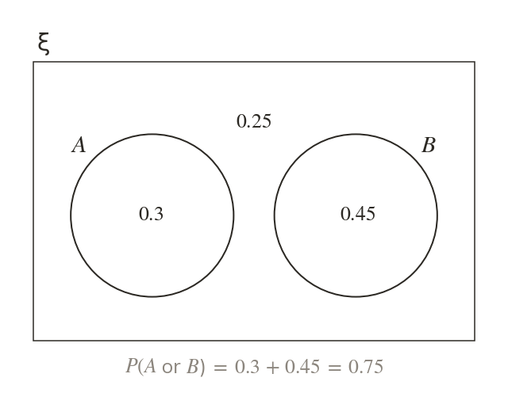
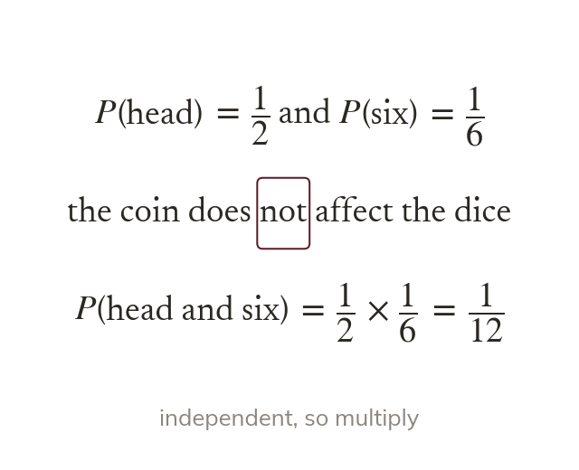
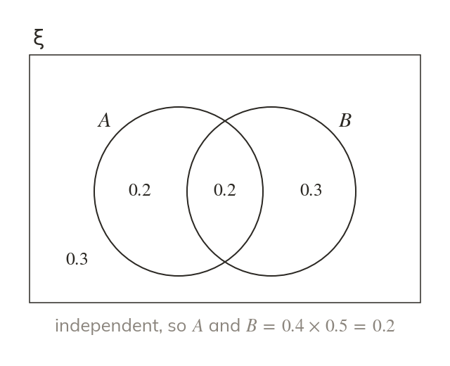
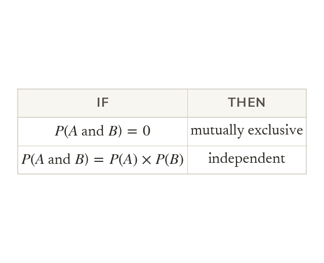
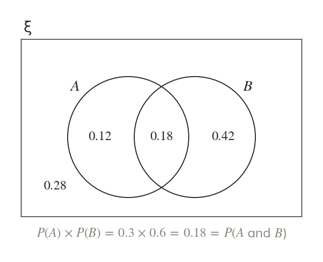
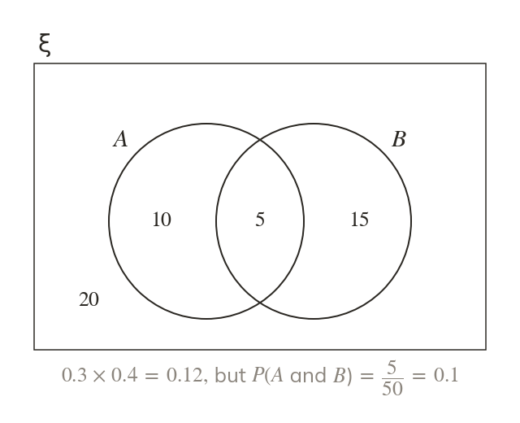

Mutually exclusive
Mutually exclusive events have no outcomes in common, so they cannot both happen. The circles do not overlap: and and or
Two special kinds of event give quick rules, for events that cannot happen together and for events that do not affect each other. The test for independence is a standard exam question, and the next lesson uses both rules on tree diagrams.
Work down the page at your own pace. Write every answer in your book first, then click to check it.
Read each card, then follow the worked examples one step at a time.

Mutually exclusive events have no outcomes in common, so they cannot both happen. The circles do not overlap: and and or

Independent events do not affect each other. Then and

Use the rule to fill the overlap first. Then fill the rest of the Venn diagram as before.
Pick an answer. If it's wrong, the feedback tells you which mistake it was.
Write the blanks in your book first, then tap each one to check.
Read each card, then follow the worked examples one step at a time.

Mutually exclusive means and
Independent means and

Work out then compare it with and Equal means independent; different means not.

Divide by the total to turn each count into a probability first. Then test as before.
Pick an answer. If it's wrong, the feedback tells you which mistake it was.
Write the blanks in your book first, then tap each one to check.
Finished? Next lesson: 12.S5.4 Tree Diagrams.
For each skill, tap the one that is true for you today. Your Revise pages start with anything you mark Not yet.
Your ratings are saved on this device only.
Log in, then search for a code to practise that skill.